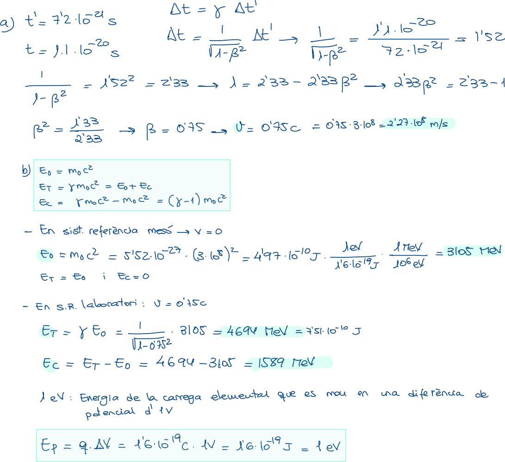

Problema JN22
El mesó 𝐽/𝜓 té una vida mitjana de 7,2∙10−21 s en el seu sistema de referència i d’1,1∙10−20 s quan es mou a velocitat relativista respecte a un sistema de referència lligat al laboratori. Calculeu raonadament:
- El valor de la velocitat respecte al laboratori. (1 punt)
- L’energia cinètica i l’energia total, en MeV, en tots dos sistemes de referència. (1 punt)
Dades: massa (en repòs) del mesó 𝐽/𝜓, 𝑚0 = 5,52∙10−27kg; velocitat de la llum en el buit, 𝑐= 3·108 m/s; càrrega elemental, 𝑞 = 1,6·10−19 C.
- Criteris de qualificació
-
Fins a 2 punts. a) Fins a 1 punt (0,5 la determinació raonada de la relació temps propi-impropi i factor de Lorentz; 0,5 la determinació raonada de la velocitat). b) Fins a 1 punt (0,2 el càlcul de cada energia en el sistema del mesó; 0,3 el càlcul de cada energia en el sistema laboratori).
